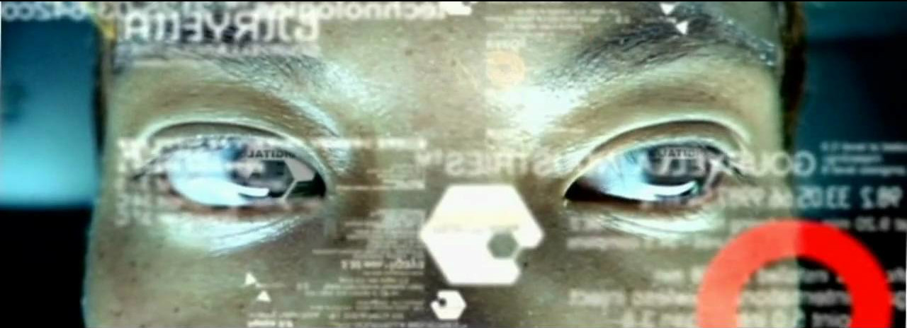

Songs
A blog for songs. What I'm listening to. What I've heard. What I'm into.
2021-03-13 at 22:09:21
Gouryella - Ligaya

It looks like the music video is promoting a ficticious biotech company called Gouryella Technology looking to create mechanical species from organic beings. It sounds like the company believes all beings are machine already, and that we're able coexist symbiotically as both biological and computerized beings with some slight modifications. Gouryella company is promoting eugenics through means of computing instead of biology. A classic trance tech-related video. This video is pretty stereotypical but still cool.
The song is super good. I enjoy most of Gouryella's old stuff up until the time period of this song/album. I love the dynamics in the song, it really creates an atmosphere and clear constrast between the calm and emotional parts.